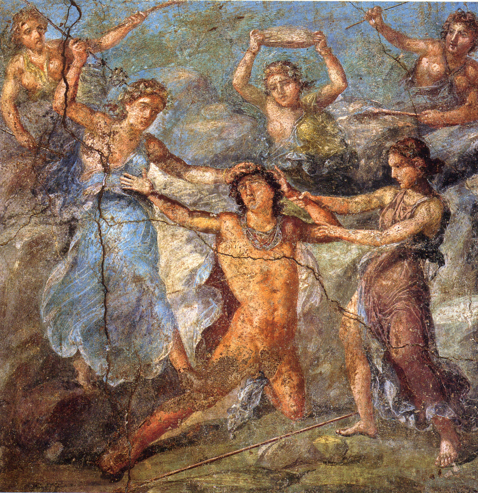

Adventures and Trials of Dionysus
Dionysus' journey from a divine child to a revered god is filled with adventures, trials, and transformations, marking his path as one of the most intriguing in Greek mythology.
Spreading the Cultivation of Vines
As Dionysus grew, he traveled far and wide, teaching the art of viticulture and winemaking. His journey took him across the world, from Asia to India, and even to the far reaches of the Mediterranean. Each place he visited was bestowed with the knowledge of growing grapes and making wine, thus spreading joy and civilization.
Challenges and Resistance
However, Dionysus' journey was not without challenges. He faced resistance from those who opposed his new ideas and the changes he brought. Kings like Pentheus of Thebes and Lycurgus of Thrace defied him, leading to tragic consequences. These stories illustrate the theme of resistance to change and the inevitable power of nature and divinity.
Recognition and Acceptance into Olympus
Despite the trials he faced, Dionysus ultimately triumphed, earning a place on Mount Olympus as an immortal god. His induction was a significant event, as it symbolized the acceptance of the new and the integration of the old, bridging different aspects of the divine and the mortal realms.